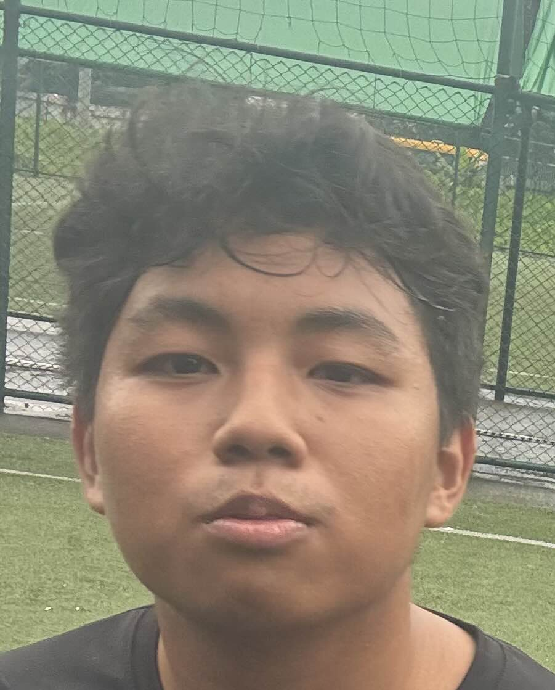

Hello! My name is Hein!
Game Developer / Software Engineer. Currently a 3rd year student at Nanyang Polytechnic
Email: hlinnhtet2006@gmail.com
SG Phone : +65 3191 2917
MM Phone : +959 799 218 300
Programming Languages: C++, C#, Python, Java

Lumbini Academy is a school in Thingangyun, Yangon, Myanmar founded in 2008.
I studied at Lumbini Academy for a decade from kg to 8th grade. The school provides education for primary, secondary and high school
that aligns with the Myanmar school system.
There was no cca until 4th grade so my primary school years are without a cca. I joined the football club on year 5, was on the weekly training sessions and got in the first team during year 7, but I didn't get to play any official matches since after I got in the first team the school closed physical classes and activities due to covid-19 and political reasons. So I didn't get to play for the school team.
I was one of the founding members of the councelling club. Created by me and my classmates/friends. I was incharge of the letter box, where students send us letters confessing or asking for advice and we reply back to them with another letter.
After finishing 8th grade in Myanmar, most students decide on choosing the government course or the IGCSE O levels. I chose O levels and had to switch school to attend. A friend of mine found GIC initially and asked me to attend also, which is how I got into this school. Even though I was there for a little under a year, I enjoyed my time and made new friends.
I was only there for a year so I didn't really have much time for CCA, but I still joined the football cca. Played in an annual GIC school tournament and was in the school team. Since the school was new, the tournament started the football club so I was one of the first members of the club.
I'm now currently studying in Nanyang Polytechnics in year 3 under Game Development and Technology. Initially I had no plans to come to Singapore to study. It was a last minute plan due to the political situation of Myanmar. I was scared at first, it was my first time living alone and people around me were unfamiliar. But I got used to it and now I'm comfortable with NYP and Singapore.
Although I didn't get into the first team, I still joined the recreational squad and joined Inter school game tournaments. I have met a lot of people with similar interests, which got me playing football outside of school.
The club has 2 sections, International chess and Chinese chess. I went for the International chess section. I stopped playing chess for years, until this cca sparked my interest again.
Annual celebration of Singapore's National Day, I joined as a motivator for the event which was a 4 months of weekly training till the actual National Day.
Most of my experiences with game development is from unity, have over a dozen projects using it. This is one of my school projects on Unity showing the use of the physics inside the engine.
I have experiences in using Unity Net Code, connect to Unity and Unreal Engine with Playfab. Experiences with MariaDB and C++ database coding. This is one of the projects I made with Untiy Net Code for a multiplayer io game.
I have done 2D and 3D modeling and lighting with OpenGL. Implemented sprite animations, ui, sound, gameplay mechanics using OpenGL C++. This is one of the projects I have made, an ai simulation with multiple ai troops and interactions with gameplay post office system.
I have done a lot of team work projects from school and outside of school. This is one of the team projects I have been a part of. The game is based on preparing for a festival, National Day Parade of Singapore. Worked with a team of 4 memebers which I was the leader of. Done with the Unity game engine.
For this mobile game I used Android Studio with Java, developed as a 2 man team. I was responsible for enemy logic including A* path finding and boss mechanics, sounds, environmental objects such as power ups and walls, collision between projectiles and characters, leaderboard system, win/lose screens and score calculations.
I have done projects with both HLSL, Unity Shader Graphs with Post Processing Effects, with a bit of shader experience in OpenGL.